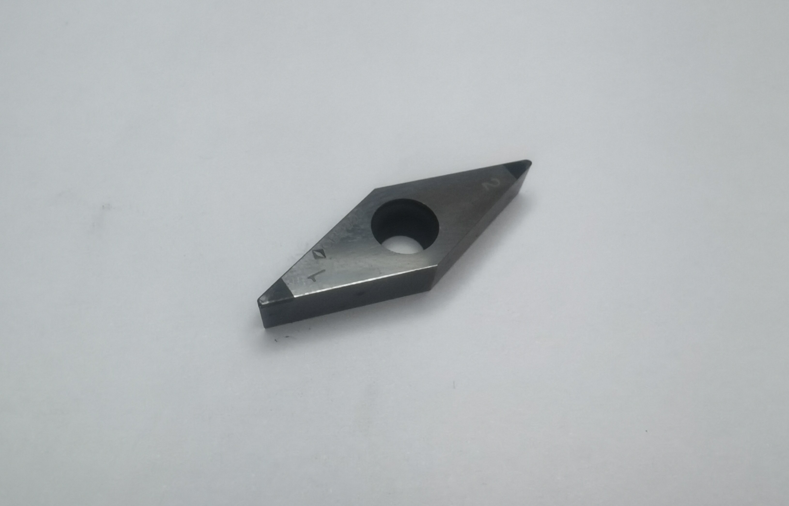
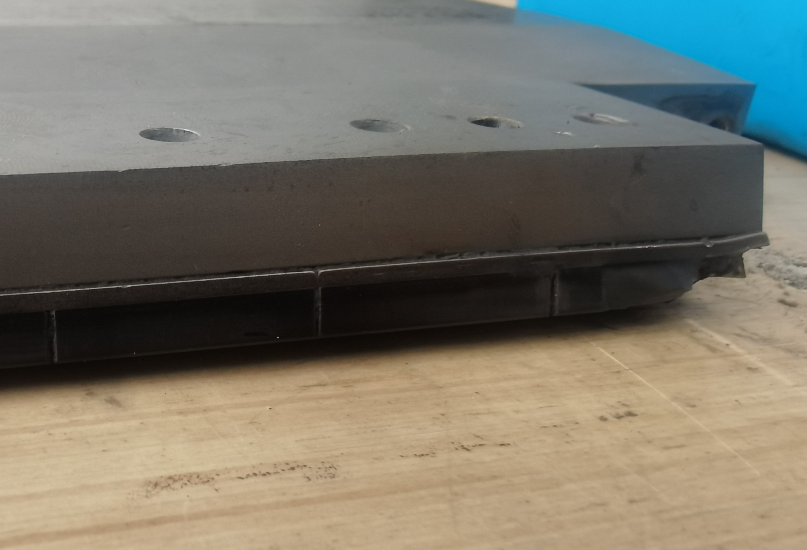

Sharpening Service Types
Customized sharpening solutions for different tool types and wear conditions
Standard Edge Sharpening
For slightly worn tools

For PCD/PCBN tools with slight edge wear, restore original geometric angles and sharpness to ensure cutting performance.
- Restore original geometric accuracy
- Cutting edge sharpness Ra≤0.2μm
- Sharpening cycle: 3-5 days
- Post-sharpening performance: over 95% of new tool
Milling cutters
Drills
Turning tools
Complex Tool Sharpening
For multi-edge, special angle tools

Precision sharpening for PCD/PCBN tools with complex geometries, multiple edges, and special angles, restoring complex contours.
- Precision repair using wire EDM
- Maintain complex geometric shapes
- Sharpening cycle: 5-7 days
- Suitable for form tools
Form tools
Step drills
Special angle tools
Insert Replacement Sharpening
For severely worn or damaged tools

For severely worn, chipped, or damaged tools, perform insert replacement and complete restoration to restore functionality.
- Repair severely worn tools
- Replace damaged inserts
- Overall performance recovery
- Sharpening cycle: 7-10 days
- Cost saving over 60%
Severely worn tools
Chipped tools
Insert replacement